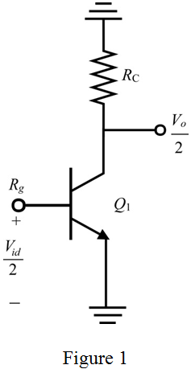
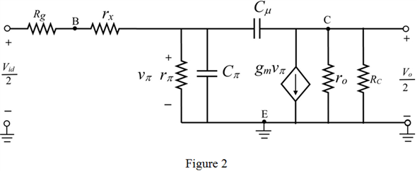
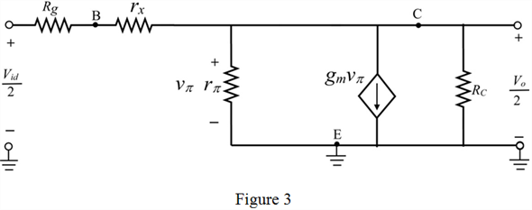

Step 1:
(a)
Refer to the circuit diagram of differential amplifier Figure 8.27 in the textbook, which is identical to “amplifier that is fed in a symmetrical fashion with a source resistance in series with each of the two input terminals”.
Observe that in Figure 8.27, the source resistance 5  is fed back, Instead of 5 consider the source resistance of 10
is fed back, Instead of 5 consider the source resistance of 10 .
.
Apply the rule; that is the power supply lines and emitter terminal become ac ground to draw the half circuit of a BJT differential amplifier.

Step 2:
Draw the high–frequency equivalent circuit for the Figure 1.

Thus, the differential half-circuit and its high-frequency equivalent circuit are sketched.
Step 3:
(b)
Redraw the equivalent circuit at low frequency.

Step 4:
Apply voltage division rule to find the voltage .
.
Write the expression for output voltage using ohm’s law.
Find the low frequency gain.
Step 5:
Write the expression for trans-conductance of the transistor.

Here is the collector current and
is the collector current and  is thermal voltage.
is thermal voltage.
The total current flows through the BJT differential amplifier  is 1 mA.
is 1 mA.
For the half circuit, the current, .
Thus, the collector current of the half circuit is .
Thermal voltage  is 25 mV.
is 25 mV.
Substitute 0.5 mA for  and 25 mV for
and 25 mV for  in the equation.
in the equation.
Step 6:
Write the expression for resistor .
.

Current gain of the common emitter amplifier
Substitute 100 for  and 0.02 for
and 0.02 for  in the expression.
in the expression.
Recall the gain expression.
Collector resistance
Substitute 0.02 for  ,
,  for and
for and  for
for  and
and  for
for  in the equation.
in the equation.
Thus, the low frequency gain of the circuit is, .
Step 7:
(c)
Refer Figure 2,
Apply Miller’s theorem to replace the bridge capacitor  by two capacitors
by two capacitors  and .
and .
Here,  is the input side capacitor to compensate the bridge capacitor and
is the input side capacitor to compensate the bridge capacitor and  is the output side capacitor to compensate the bridge capacitor, and
is the output side capacitor to compensate the bridge capacitor, and  is the open loop gain.
is the open loop gain.
Capacitor  and
and  are connected parallel to
are connected parallel to  and respectively.
and respectively.

Step 8:
Write the expression for .
Substitute 600 MHz for  , 0.5 pF for
, 0.5 pF for  and 0.02 for
and 0.02 for  .
.
Find the input capacitance.
Substitute for  , for
, for  and
and  for
for  in the equation.
in the equation.
Thus, input capacitance of the circuit is, .
Step 9:
Write the expression for 3-dB frequency.

Here,  is the input resistance of the circuit.
is the input resistance of the circuit.
Substitute 3.344 k for  and 100.5 pF for in the expression.
and 100.5 pF for in the expression.
Therefore, the 3-dB frequency of the circuit is, .
Step 10:
Write the expression for gain-bandwidth product (GBP).
Thus, gain-bandwidth product is, .